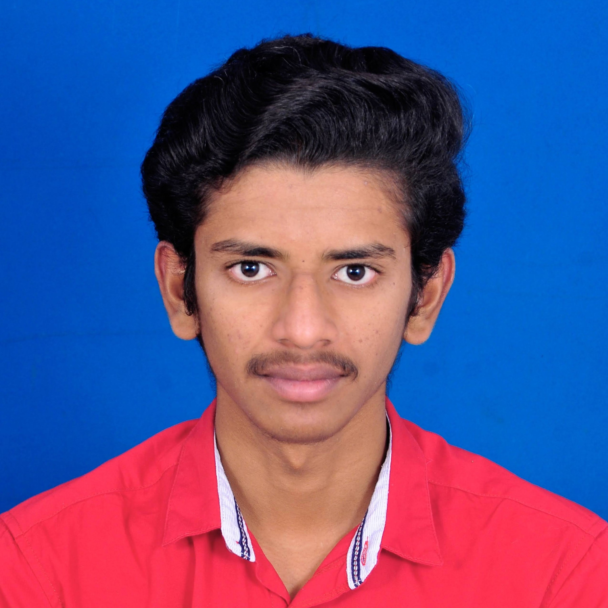

Motivated Computer Science graduate specializing in Artificial Intelligence, Machine Learning, and Computational Intelligence. Hands-on experience architecting full-stack machine learning models, data pipelines, and scalable optimization solutions. Proficient in Python, TensorFlow, Scikit-learn, and Google OR-Tools, with a proven track record of deploying live AI applications and publishing technical research. Seeking an entry-level role in software development, data science, or AI engineering to deliver robust, eco-efficient, and data-driven solutions.
CGPA: 9.33 / 10.0
Honors: 1st Place Certificate of Merit (1st Year, 2nd Semester Examinations).